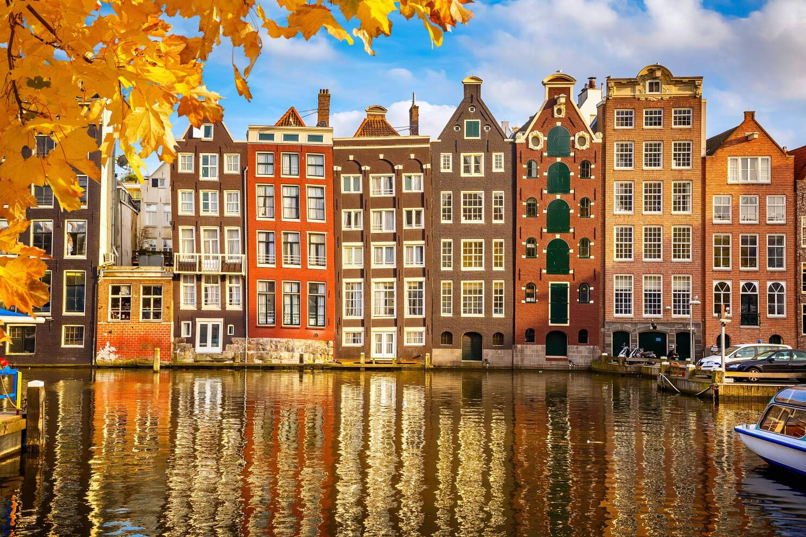

<button commandfor="mydialog" command="show-modal">Show modal dialog</button>
<dialog id="mydialog">
  <button commandfor="mydialog" command="close">Close</button>
  Dialog Content
</dialog>

<button commandfor="my-img" command="--rotate-left">Rotate left</button>
<button commandfor="my-img" command="--rotate-right">Rotate right</button>
<button commandfor="my-img" command="--rotate-top">Rotate top</button>
<button commandfor="my-img" command="--rotate-bottom">Rotate back</button>

<style>
#my-img {
    transition: 2s ease-in-out;
}
</style>



<script defer src="script.js" ></script>
<meter value="5" min="1" max="5" title="GB"></meter>

  <div class="meter-gauge">
    <span style="width: 75%"></span>
  </div>


<style>
.meter-gauge {
  position: relative;
  display: inline-block;
  font-size: 28px;
  letter-spacing: 2px;
}
.meter-gauge::before {
  content: "★★★★★";  
  color: lightgray;
}
.meter-gauge span {
  position: absolute;
  top: 0; left: 0;
  overflow: hidden;   
  white-space: nowrap;
  color: gold;
}
.meter-gauge span::before {
  content: "★★★★★"; 
}
meter { display: none; }
</style>